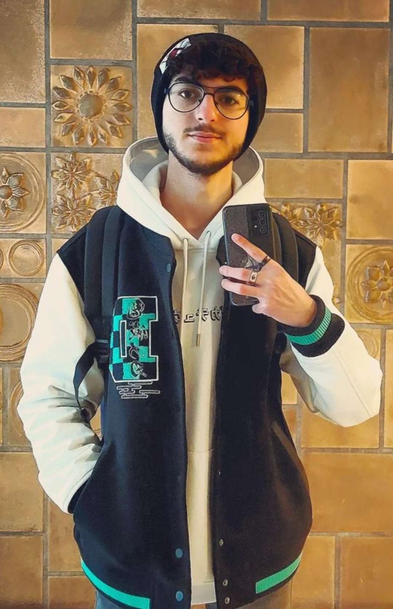
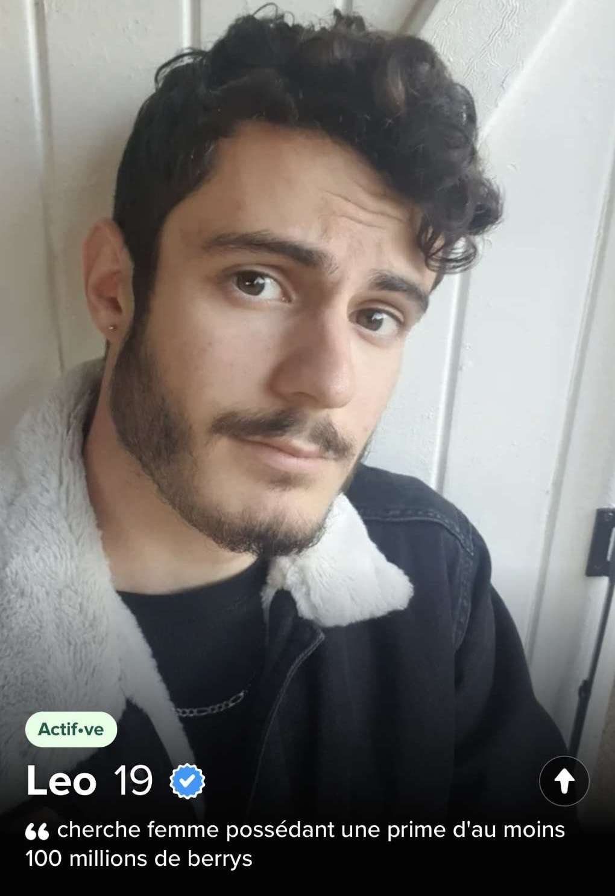

La vie de Noam à L'Estiam
Étant un étudiant plutôt bavard, il se lia d'amitié avec...
Noam ou "le Baka"
Sonya, son premier amour dans la classe...


Avec qui l'amour disparaîtra si rapidement après le début, mais il attira les flammes de son pire ennemi...

Après son BAC PRO harceleur pro, Antoine prit pour cible le pauvre Noam.
Dans cette lutte acharnée entre les deux protagonistes, il réussit à calmer le malin.
Après toute cette haine, il trouva sa lueur d'espoir, son réconfort, son soleil... LEO.
L'amour fut si fort si vite...
Ils restèrent amis pendant la durée de 4 minutes et 11 secondes, puis suite à une trahison de Leo...
Leo trompa Noam avec deux magnifiques étalons, ce qui marque la fin de leur amour.
Malgré des hauts et des bas, Noam a su rester fidèle à lui-même.
plus sur que jamais avec le soutien de toute la classe